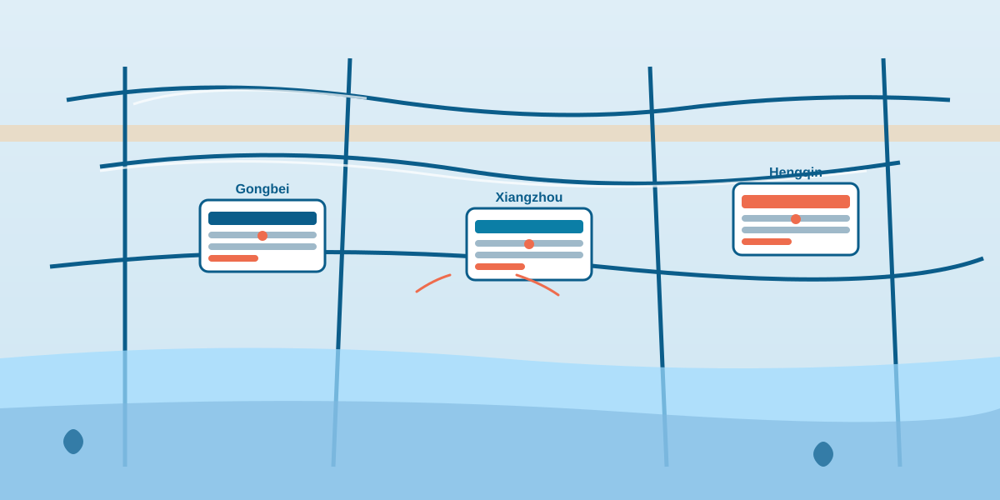

Zhuhai isn't big, but picking the wrong neighborhood can sink your trip. Based on real conditions, here's how I split the city into three sensible zones — and which one fits you.
Updates this month: 2 new hotels opened in Hengqin; Spring Festival prices rising ~40% — book early.

| You are... | Neighborhood | Why |
|---|---|---|
| Shopping / eating / border-hopping | Gongbei | Central, everything walkable, Macau next door |
| Coastal walk / calm / cycling | Xiangzhou | Lovers' Road & Fisher Girl at your doorstep |
| Chimelong / family / new hotels | Hengqin | The theme park is in this district |
Location: Zhuhai's busiest commercial center, right on the Macau border.
Good for: shopping, eating, nightlife; people crossing between Macau and Zhuhai several times; first-timers who want the heart of the city.
Avoid if: you want a quiet seaside retreat, or you're sensitive to noise at night.
Location: the coastal district holding Lovers' Road and Fisher Girl Statue.
Good for: sea views, boardwalk mornings, cycling; couples and families who want calm.
Avoid if: you want nightlife, or arrive very late — many shops close by 9pm.
This is the district we operate in and the best area for Airbnb hosts. If you rent here, see our turnaround cleaning service.
Location: Zhuhai's newest district, the Macau/Zhuhai cooperation zone.
Good for: Chimelong Ocean Kingdom families; new-hotel fans; quick Macau arrivals.
Avoid if: you want traditional Zhuhai, or you're budget-tight — this district runs pricey.
| Area | Guest profile | Cleaning emphasis | Our typical rate |
|---|---|---|---|
| Gongbei | Short business trips | High hygiene demands | RMB 600–800 |
| Xiangzhou | Relaxing vacationers | Possible wear & tear | RMB 500–700 |
| Hengqin | Families | Family-friendly setup | RMB 700–1000 |
Need a fast turnaround? Guests checking out while new ones arrive — we handle it in as little as 4 hours. Book a cleaning →
Next update: Spring Festival hotel prices + New Year booking window.
We answer within 2 hours — and if you're a host, we can help make your place guest-ready.
Get Host Services